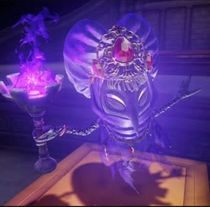

Le fantôme rouge s'appelle Jo.

Le fantôme bleu s'appelle Beth.

Le fantôme vert s'appelle Amy.

Le fantôme violet s'appelle Meg.
Ils reposent dans le cimetière du village Cocorico.
Le fantôme rouge s'appelle Jo.
Le fantôme bleu s'appelle Beth.
Le fantôme vert s'appelle Amy.

Le fantôme violet s'appelle Meg.

Un Armos a un bouclier.

Le Moblin Géant a une masse et pas de bouclier.

Le Leever ne se déplace que sur le sable.

Une Tetdoss a des ailes et peut être de couleur rouge, verte, bleue ou blanche.
L’icône du bowling teigneux est une cible avec un missile teigneux.
L’icône de la boutique de missiles teigneux est un missile teigneux.
Le prix d'un Esprit est 200 rubis
Le prix d'une flamme bleue est 200 rubis
Le prix d'une fée est 50 rubis

Les masques ne s'achètent pas, ils se louent.

Le 1er masque qui se loue est le masque de Keaton, qui vaut 10 rubis et est vendu 15 rubis à un garde.

Le 2e masque qui se loue est le masque de mort, qui vaut 20 rubis et est vendu 10 rubis à Skull Kid.

Le 3e masque qui se loue est le masque d'Effroi, qui vaut 30 rubis et est vendu 30 rubis à l'enfant du cimetière.

Le 4e masque qui se loue est le masque du lapin, qui vaut 50 rubis et est vendu 200 rubis au coureur de la plaine d'Hyrule.

Ce masque s'appelle le masque de vérité.
Il y a une carte de la forêt Kokiri gravé sur du bois dans la maison des frères Je-Sais-Tout.